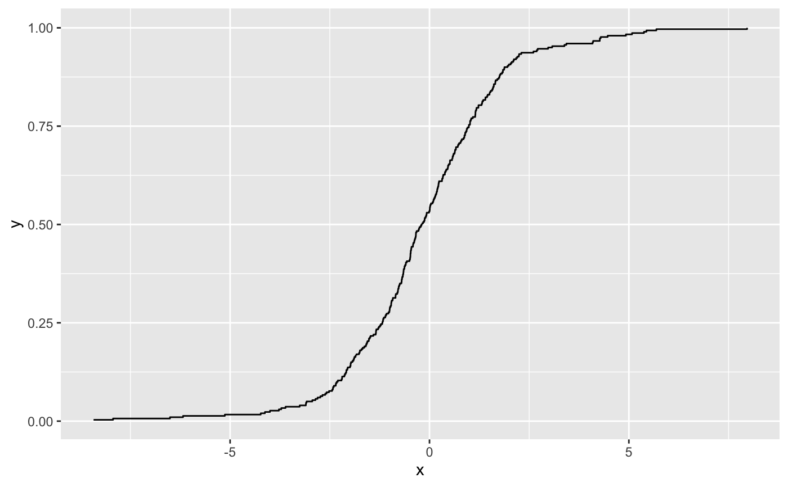
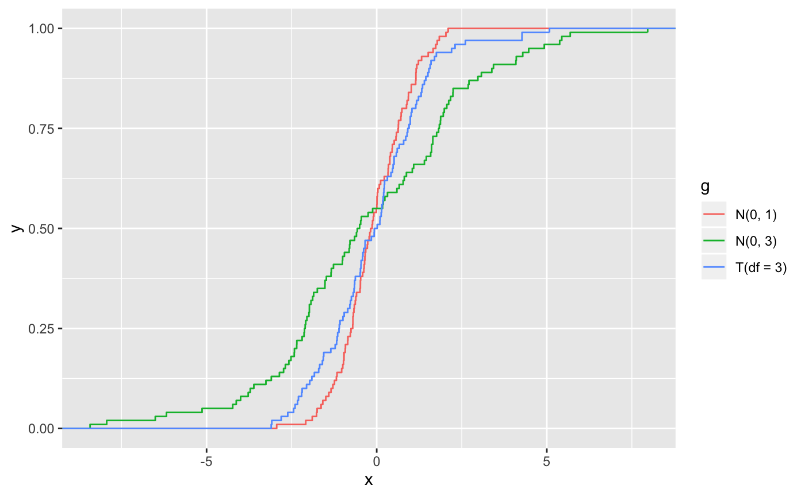

The empirical cumulative distribution function (ECDF) provides an alternative visualisation of distribution. Compared to other visualisations that rely on density (like histograms or density plots) the ECDF doesn't require any tuning parameters and handles both continuous and categorical variables. The downside is that it requires more training to accurately interpret, and the underlying visual tasks are somewhat more challenging.
gf_ecdf(object = NULL, gformula = NULL, data = NULL, ..., group, pad, n = NULL, xlab, ylab, title, subtitle, caption, geom = "step", stat = "ecdf", position = "identity", show.legend = NA, show.help = NULL, inherit = TRUE, environment = parent.frame())
| object | When chaining, this holds an object produced in the earlier portions of the chain. Most users can safely ignore this argument. See details and examples. |
|---|---|
| gformula | A formula with shape |
| data | The data to be displayed in this layer. There are three options: If A A |
| ... | Other arguments passed on to |
| group | Used for grouping. |
| pad | If |
| n | if NULL, do not interpolate. If not NULL, this is the number of points to interpolate with. |
| xlab | Label for x-axis. See also |
| ylab | Label for y-axis. See also |
| title | Title, sub-title, and caption for the plot.
See also |
| subtitle | Title, sub-title, and caption for the plot.
See also |
| caption | Title, sub-title, and caption for the plot.
See also |
| geom | The geometric object to use display the data |
| stat | The statistical transformation to use on the data for this layer, as a string. |
| position | Position adjustment, either as a string, or the result of a call to a position adjustment function. |
| show.legend | logical. Should this layer be included in the legends?
|
| show.help | If |
| inherit | A logical indicating whether default attributes are inherited. |
| environment | An environment in which to look for variables not found in |
Data <- data.frame( x = c(rnorm(100, 0, 1), rnorm(100, 0, 3), rt(100, df = 3)), g = gl(3, 100, labels = c("N(0, 1)", "N(0, 3)", "T(df = 3)") ) ) gf_ecdf( ~ x, data = Data)# Don't go to positive/negative infinity gf_ecdf( ~ x, data = Data, pad = FALSE)# Multiple ECDFs gf_ecdf( ~ x, data = Data, color = ~ g)